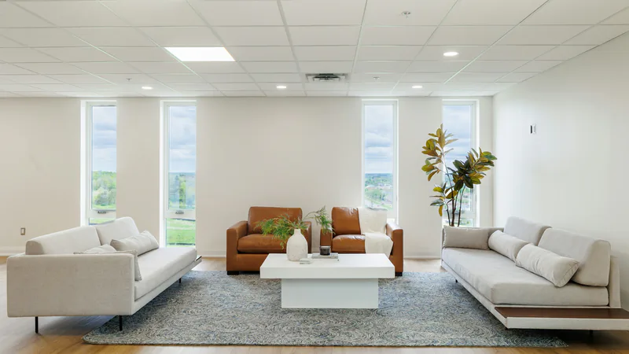

Creative template & Bootstrap showcase
A single-page visual inventory of the Meadowside Clinic design language — pairing semantic CSS custom properties and editorial serif typography with Bootstrap 5.3.9 components and zero custom JavaScript.
System architecture at a glance
-
Framework: Bootstrap
5.3.9(CDN CSS + bundle JS for declarativedata-bs-*) -
Custom JS:
0lines authored; tabs, accordions, collapse, and validation run natively -
Theme layer: Dual-layer
--clinic-*&--bs-*tokens instyle.css -
Custom classes:
6helpers (.section-hero,.clinic-eyebrow,.clinic-card-link,.border-accent,.clinic-error-hint,.skip-link) -
Accessibility: WCAG 2.1 AA+ contrast, 44px touch targets,
:focus-visibleoutlines, andforced-colorsrules
Colour palette & daylight surfaces
190° Mineral Teal anchors utility UI while Rosewood marks primary booking actions.
Mineral Teal
#12525E · --clinic-primary
Primary links, active nav rule, .btn-primary, focus accent.
Deep Teal
#0C3C45 · --clinic-primary-dark
Hover states, form labels, high-contrast Mist text emphasis.
Rosewood
#8A3C54 · --clinic-accent
Booking CTAs (.btn-secondary), focus rings, quote stripe.
Deep Rosewood
#6E2C40 · --clinic-accent-dark
Uppercase .clinic-eyebrow text and CTA hover fills.
Deep Pine Ink
#14282C · --clinic-text
Primary body copy & headings across all light surfaces.
Slate Muted
#385257 · --clinic-muted
Secondary descriptions, captions, and footer metadata.
Cool & Mixed Borders
#B8CED3 / color-mix()
--clinic-surface-border frames cards, tables & inputs.
Error Crimson
#9E243B on #FDF3F5
CSS :user-invalid borders and field error hints.
Three alternating page band surfaces
.section-hero / #FAFCFD
Pure daylight ground with subtle Mist & Linen radial gradients on openers, plus default page bands and the sticky header.
.bg-primary-subtle / #EAF3F5
Mapped onto Bootstrap subtle primary utilities for interactive sections, card headers, badges, and the global footer.
.bg-body-tertiary / #F5F2ED
Soft organic warmth mapped onto --bs-tertiary-bg for reflection bands, care philosophy
cards, and callout asides.
Literata & Source Sans 3
Serif display hierarchy meets clean sans-serif UI at a 17px base scale.
Live type hierarchy & editorial quote
Display 5 with italic inflection
Literata · clamp(2rem, 1.35rem + 1.4vw, 2.75rem) · italicised
<em> in Mineral Teal
Section heading .h2 balanced line wraps
Card title .h5.fw-semibold
Lead copy spans its container without a 65ch width lock, introducing key sections cleanly.
Body copy runs at 1.0625rem (17px, 1.65 line height) and is
capped at max-width: 65ch with text-wrap: pretty for comfortable reading.
“Patient reflections reuse Bootstrap’s
.blockquotein Literata alongside our custom.border-accentRosewood stripe.”
Typographic & reading-measure rules
-
Zero-CLS font metrics:
@font-facefallbacks (size-adjust,ascent-override) match Literata and Source Sans 3 before web fonts swap in. -
65ch reading measure: Paragraphs and lists cap at
65chand auto-centre inside.text-centerblocks, while releasingp.leadand flush list dividers. -
Modern line wrapping: Headings and card headers use
text-wrap: balance(avoiding orphans); body copy and quotes usetext-wrap: pretty. -
Header typography reset: UI eyebrows, card headers, and accordion triggers switch back
from serif inheritance to
Source Sans 3.
Framed media · .ratio-16x9 &
.rounded-4

Responsive WebP sets (srcset + sizes) with explicit dimensions and
object-fit-cover inside .ratio-4x3 / .ratio-16x9 boxes.
Buttons, badges & container patterns
Stock Bootstrap classes reskinned via --bs-* custom properties.
Buttons & action groups
Every button enforces min-height: 44px for WCAG touch targets and pairs with
.d-grid.gap-2.d-sm-flex so actions stack full-width on narrow phones.
Note: .btn-secondary is mapped to Rosewood exclusively for booking & enquiry submits;
.btn-primary serves return & utility navigation.
Badges, sticky navbar & mobile offcanvas
.sticky-top +
.offcanvas-lg.offcanvas-end)
The sticky header above renders on every page: inline desktop links with CSS scaleX
underlines collapse below 992px into a right-hand Bootstrap offcanvas drawer with a
44px toggler and tap-to-call row.
Card spacing unification & callout surfaces
Header + .list-group-flush + Footer
-
Shared 24px gutter:
--bs-card-cap-padding-x,--bs-card-spacer-x, and list-item padding align cleanly. -
Mobile step-down: Compacted smoothly to
20pxbelow576px. - Where used: About, Booking & Contact sidebars.
.clinic-card-link
.stretched-link makes the whole card clickable with subtle image zoom & elevation lift.
Tabs, accordion & collapse disclosure
Powered strictly by Bootstrap’s data-bs-toggle HTML attributes.
1. Segmented .nav-pills tabs
(Treatments & Visiting)
Replaces stacked prose with focused panels on Sea-Glass Mist pill trays. Active pill adopts
Mineral Teal while inactive tabs maintain > 7:1 text contrast.
Below 576px, our CSS flips .nav-pills to equal-width flex buttons so
multi-option tab bars never wrap awkwardly or overflow.
Native role="tablist", role="tab", and role="tabpanel"
enable arrow-key switching via Bootstrap’s bundle script.
2. Standalone .collapse toggle
(Booking)
Keeps secondary reassurance tucked out of the primary visual flow until a patient clicks to inspect it.
data-bs-toggle="collapse" — identical to the
Quick visit checklist on Book an Appointment.
3. Boxed stay-open .accordion (Treatments FAQ)
Omitting data-bs-parent keeps opened answers visible for easy comparison, while an explicit
1px outer border on .accordion eliminates corner tapering.
style.css overrides heading inheritance
back to Source Sans 3 at a 48px minimum hit height while keeping
Literata for editorial headings.
--bs-accordion-btn-icon and
--bs-accordion-btn-active-icon.
Responsive tables & native form states
Rounded table containers and CSS :user-invalid hints without script handlers.
.table-responsive & .table-hover
Styled with Mist column headers, rounded outer corners inside a .rounded-4.border wrapper, and
accessible <caption> / scope attributes. Below is where each feature lives:
| Feature / Component | Clinic Page(s) |
|---|---|
| Sticky navbar & offcanvas | All 8 site pages |
.clinic-card-link + .stretched-link |
Home |
3-col cards & <aside> split |
About, Treatments |
.table, .nav-pills & .accordion |
Treatments, Visiting |
Koalendar <iframe> & .collapse |
Book an Appointment |
Stacked form & :user-invalid |
Contact → Thank You |
Stacked form & post-interaction :user-invalid
Clear and blur an empty required input below to inspect live Crimson :user-invalid borders and
.clinic-error-hint feedback (no hidden error IDs in aria-describedby).
Quiet motion & under-the-hood craft
Compositor-only hover cues, strict reduced-motion opt-ins, and browser-level refinements.
Animations & hover transitions
-
Custom ease curve: Interactive transitions share
--clinic-ease: cubic-bezier(0.16, 1, 0.3, 1)for a calm, weighted deceleration without bounce. -
Desktop nav hairline sweep:
header .nav-link::afterexpands fromscaleX(0)toscaleX(1)anchored atleft center(0.3s) on≥ 992pxscreens; below992px, active links fall back to2pxunderlined text. -
Button micro-lift & active halo: Buttons lift
translateY(-1px)on hover with0.25sfill transitions; when on Booking,.btn-secondary.activeadds a Porcelain-to-Rosewood double outline ring. -
Linked card lift + photo zoom: Hovering or tabbing into
.clinic-card-linkraises the cardtranslateY(-2px)with a deeper teal shadow while zooming its<img>toscale(1.03)over0.6sinside.overflow-hidden. -
Smooth anchor scrolling:
html { scroll-behavior: smooth; }glides in-page jumps whilescroll-padding-top: 5.25remstops targeted headings clear beneath the sticky header.
Accessibility & system preference safeguards
-
Strict reduced-motion opt-in: Hover lifts, image scales, and nav sweeps only compile
inside
@media (prefers-reduced-motion: no-preference), andprefers-reduced-motion: reduceresetsscroll-behavior: auto. -
Windows Forced Colors Mode:
@media (forced-colors: active)adds explicitCanvasTextborders to buttons, cards,<aside>, pills, header, and footer, converts focus rings toHighlight, and hides decorative eyebrow hairlines. -
Keyboard-only focus rings:
:focus-visiblerenders a crisp3px solid var(--clinic-accent)ring (2pxoffset) across light and subtle headers while suppressing mouse-click focus outlines. -
Skip link & minimum hit sizes: Tabbing first reveals
.skip-linkfixed at top-left (z-index: 1080); interactive buttons and nav toggles stay at least44pxtall (accordion headers48px). -
Bootstrap native transitions: Tabs use
.fadeopacity cross-fades, accordions animate height alongside custom Mineral Teal SVG chevrons, and mobile menus slide in via.offcanvas-lg.
Subtle CSS, mobile & static-platform details
Border geometry & colour math
-
OKLab border blending:
--clinic-surface-bordermixes 18% Mineral Teal into warm stone inoklabso borders fit both Mist and Linen without hue shifts. -
Anti-tapering accordions: Outer borders sit on
.accordionwhile items strip side borders, keeping rounded corners even. -
Corner-clipped aside stripes:
overflow: hiddenplus a::beforeborder eliminates curved corner “horns”.
Mobile viewport & form ergonomics
-
No iOS zoom on focus: Inputs set
font-size: max(1rem, 1em)(≥ 16px) to stop Safari zooming in when tapping fields. -
Responsive phone formatting: Navbar telephone numbers use non-breaking spaces
(
020 8555 0142) so digits never split across lines. -
Equal-width mobile pills & card gutters: Below
576px,.nav-pillsflex evenly and card padding steps smoothly from24pxto20px.
Zero-JS validation, security & speed
-
Post-interaction errors only: Hints rely strictly on
:user-invalidand are excluded fromaria-describedbyuntil the user interacts. -
LCP & responsive WebP: Opener photos add
fetchpriority="high"and explicit aspect boxes, while secondary photos setloading="lazy". -
Static hosting & SRI: CDN assets enforce
integrity="sha384-...", referrer policy is pinned site-wide, and forms submit viaGETfor GitHub Pages.